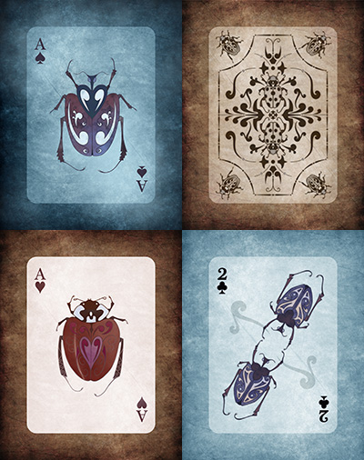

\[._.]/ -
\(• ◡ •)/ - A Deck of Playing Cards
Ten years after I stopped drawing, I realized that I was burning out of my technology career. Everything seemed pointless, non-permanent, easily and readily replaced with the latest internet upgrades. Everything I created, at most 3 years later, was either gone or demoted to "the way you shouldn't do things." Then I started wondering what I was leaving behind for my daughter. I want to her to be able to say, "my dad made that."
Two years ago, I started drawing again. Every single day; no exceptions. Sometimes I'd go through illustration training books or online videos, most days, I'd just draw little pictures on sticker labels for my daughter. I found insects to be particularly fascinating, specifically beetles. I started drawing a lot of little beetle stickers.
I've always wanted to make a deck of playing cards. It's been in the back of my mind, but never something I really thought was doable. But then I started to notice that printing was becoming common, affordable, available to anyone. Then I realized that I had drawn thousands of little beetle stickers and I started thinking bigger. What if every card in the deck was a unique piece of art? What if every card could be set on a canvas and put on walls? Why not make every card as special as a face card?
Here is a tiny preview (and early draft) sampling of the card deck I'm drawing as they will appear when printed on 12x16 canvas frames. I'll be finishing this up in the first part of 2015 and throwing out a Kickstarter with the goal of getting this deck into as many hands as possible.
Interested in a deck or a canvas print? Hit me up on everyone else's social network: @antic